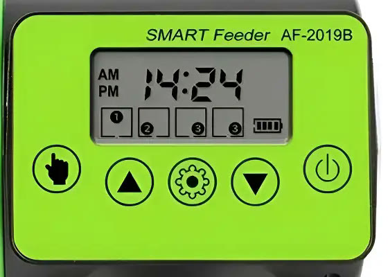
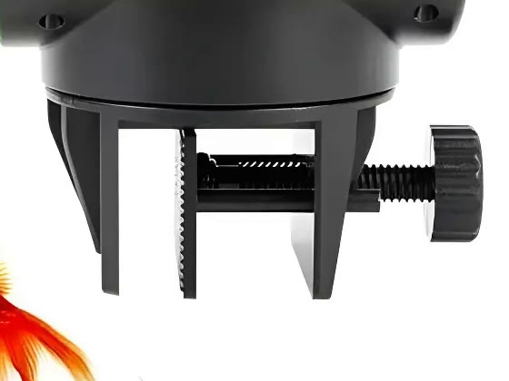
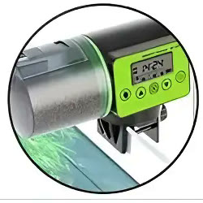
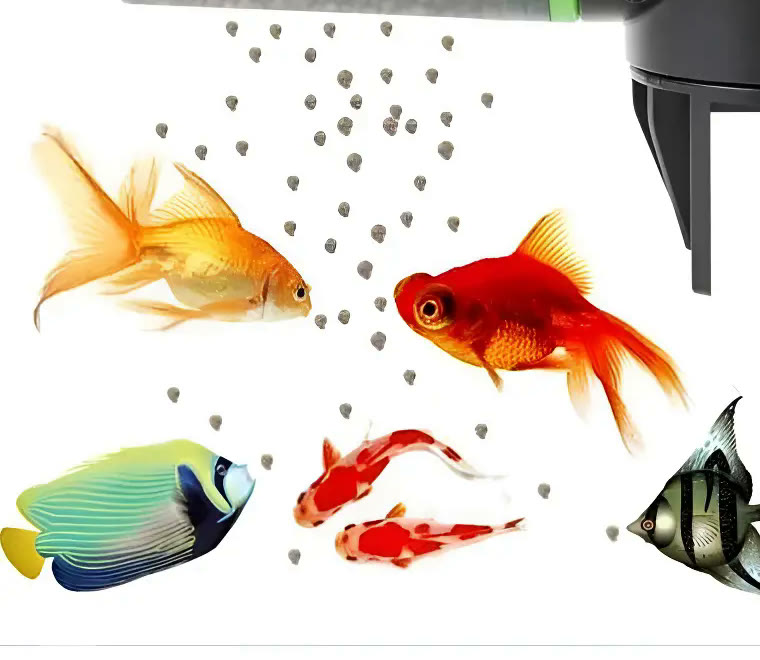

Achado nº 122
Pedindo pro vizinho dar comida pro peixe na viagem?
Alimentador automático de peixes com timer de até 4 refeições
★ 4,9 · mais de 270 avaliações no Mercado Livre





O que diz a página oficial do produto
- É um alimentador que se prende na borda do aquário com uma presilha de rosca e solta a ração de um tambor
- Dá para programar até 4 alimentações por dia, num visor digital
- Tem um botão para soltar comida na hora
- O tambor comporta até 200 mL de ração
- Funciona com 2 pilhas AA, que não vêm junto; não vai na tomada
- Segundo o anúncio, é silencioso e dá para regular a quantidade de comida
- Segundo o anúncio, o alimentador não pode cair na água
- No Mercado Livre, tem nota 4,9 com mais de 270 avaliações e mais de mil vendidos
Link de afiliado: se você comprar por ele, a Achadaria pode receber uma comissão, sem custo extra para você. Preço, estoque e entrega são da loja e podem mudar; confira lá antes de comprar.